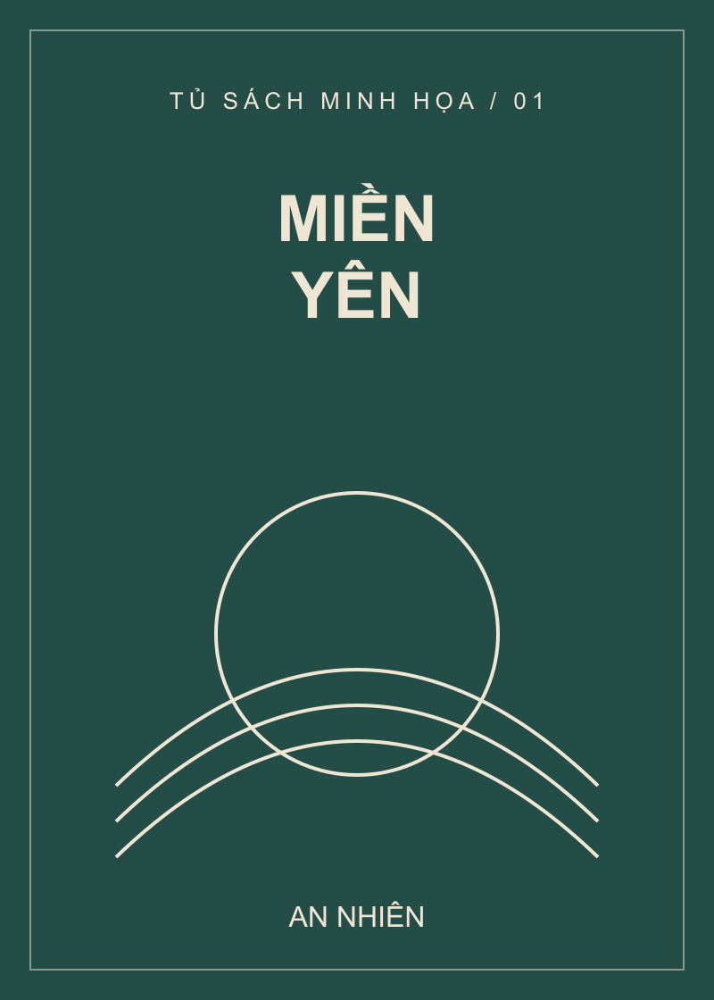
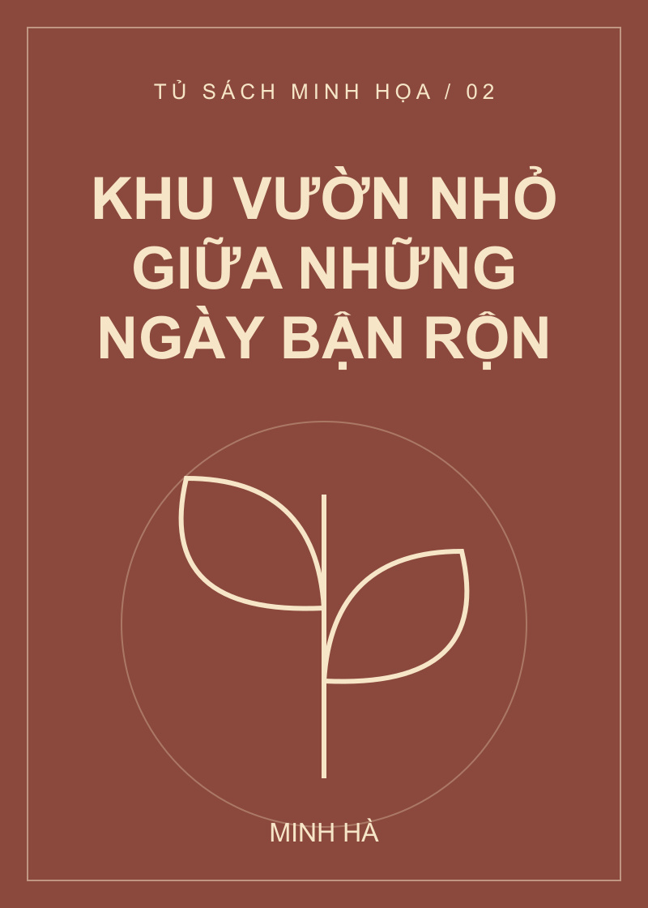
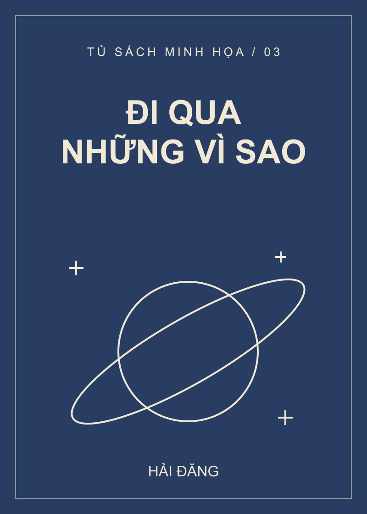
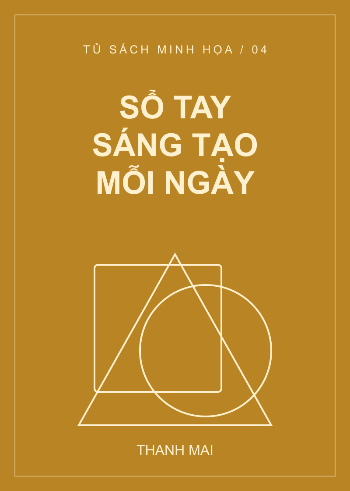

Tản văn
Miền yên
Những trang viết dịu dàng cho một khoảng dừng giữa nhịp sống thường ngày.
MỞ MỘT TRANG SÁCH, THÊM MỘT GÓC NHÌN
Một khoảng dừng cho những trang sách mới. Từ tản văn nhẹ nhàng đến những ý tưởng sáng tạo, Góc sách mời bạn tìm cuốn sách phù hợp với sở thích và nhịp sống của mình.
Chọn một chủ đề để đến cuốn sách gợi ý tương ứng.
Đọc giới thiệu ngắn, so sánh giá và mở thông tin chi tiết để tìm hiểu thêm.

Tản văn
Những trang viết dịu dàng cho một khoảng dừng giữa nhịp sống thường ngày.

Lối sống
Tìm một khoảng xanh và nuôi dưỡng những thói quen nhỏ mỗi ngày.
Giá bán: 125.000 đ
Xem chi tiết
Khám phá
Một lời mời ngước nhìn bầu trời và bắt đầu đặt những câu hỏi mới.

Kỹ năng
Giữ lại ý tưởng và xây dựng một nhịp thực hành sáng tạo của riêng bạn.
Bộ sưu tập sử dụng sách mẫu phục vụ bài thực hành.
Tìm hiểu chủ đề và nội dung giới thiệu trước khi chọn cuốn sách bạn muốn đọc.
Tản văn
Miền yên mở ra những lát cắt đời thường, nơi các cuộc gặp gỡ, ký ức và khoảnh khắc nhỏ trở thành lời nhắc về sự quan tâm dành cho bản thân. Cuốn sách mẫu được xây dựng theo hướng tản văn nhẹ nhàng, phù hợp để đọc từng đoạn và suy ngẫm.
Gợi ý cho người yêu tản văn, thích những đoạn đọc ngắn và giọng kể chậm rãi.
Lối sống
Khu vườn nhỏ giữa những ngày bận rộn gợi mở cách tạo không gian thư giãn giữa lịch trình nhiều công việc. Qua hình ảnh một khu vườn, nội dung sách mẫu hướng đến sự chăm sóc đều đặn, cảm giác kết nối với thiên nhiên và niềm vui khi làm những việc nhỏ.
Gợi ý cho người quan tâm lối sống cân bằng và muốn dành thêm thời gian cho không gian sống của mình.
Khám phá
Đi qua những vì sao — Hành trình khám phá bầu trời đêm là sách mẫu dành cho hành trình tìm hiểu thế giới bằng sự tò mò. Phần giới thiệu tập trung vào việc làm quen với quan sát bầu trời, ghi lại câu hỏi và nuôi dưỡng hứng thú khám phá.
Gợi ý cho người yêu chủ đề khám phá và muốn bắt đầu tìm hiểu bầu trời bằng những quan sát gần gũi.
Kỹ năng
Sổ tay sáng tạo mỗi ngày sử dụng hình thức nội dung mẫu để gợi ý việc ghi chép, quan sát và thử cách tiếp cận mới. Thay vì chờ một ý tưởng lớn, người đọc được mời bắt đầu từ một câu hỏi, một bản phác hoặc một ghi chú nhỏ.
Gợi ý cho người thích viết, ghi chép, phác thảo và muốn hình thành thói quen sáng tạo.
Bắt đầu từ tản văn, lối sống, khám phá hoặc kỹ năng để đến cuốn sách gợi ý.
Đọc tên, tác giả, giới thiệu ngắn và so sánh giá bán với giá gốc khi có giảm giá.
Chọn Xem chi tiết để tìm hiểu nội dung gợi mở và nhóm người đọc được gợi ý.
Chọn Chủ đề đọc trên menu, sau đó chọn nhóm bạn quan tâm. Liên kết đưa bạn đến thẻ sách gợi ý trong danh sách.
Giá bán là mức giá nổi bật trên thẻ. Khi có giảm giá, giá gốc được gạch ngang và mức giảm nằm cạnh. Sách không có giảm giá chỉ hiển thị giá bán.
Chọn Quay lại thẻ sách ở cuối phần giới thiệu chi tiết. Bạn cũng có thể chọn Sách nổi bật trên menu để về đầu danh sách.